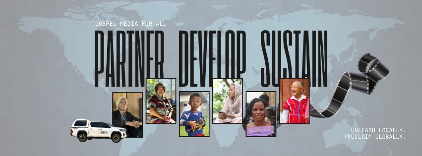
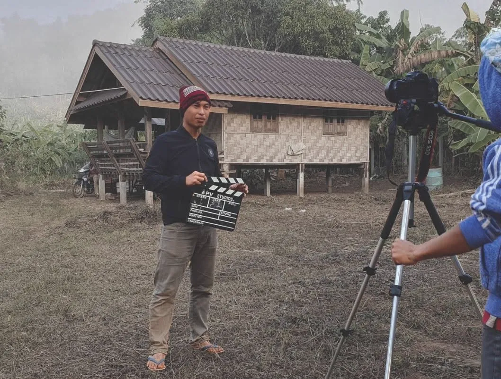
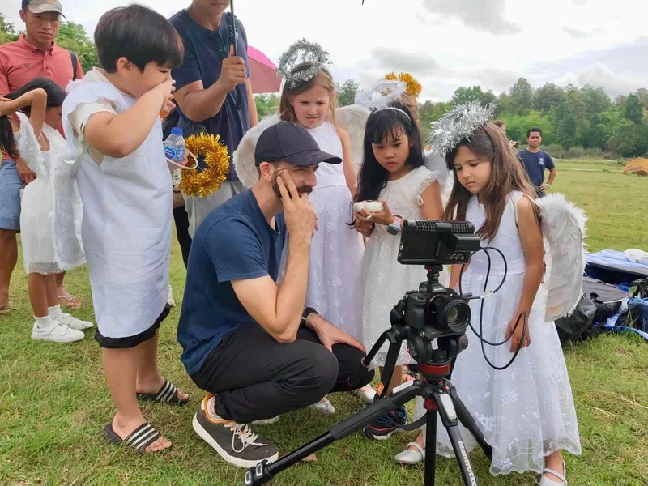
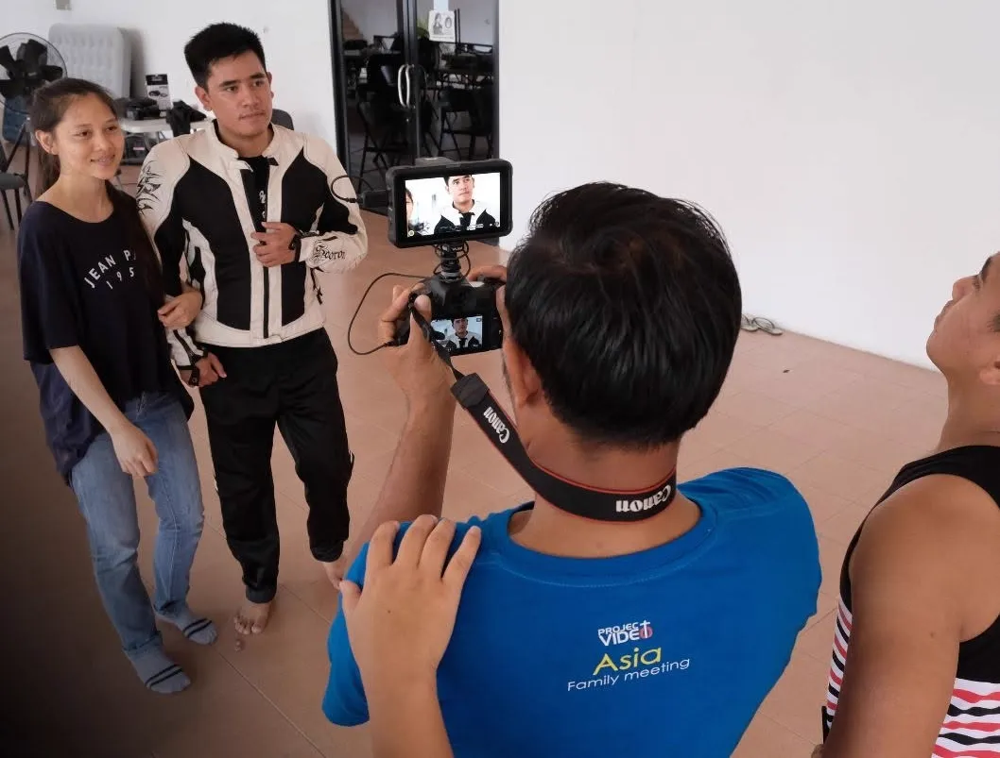
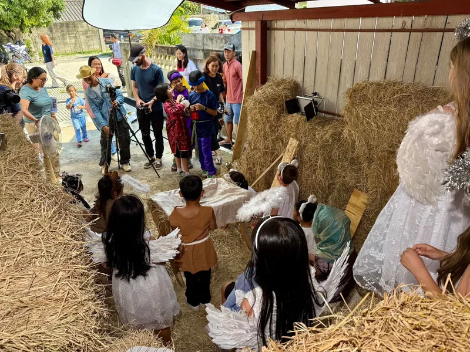
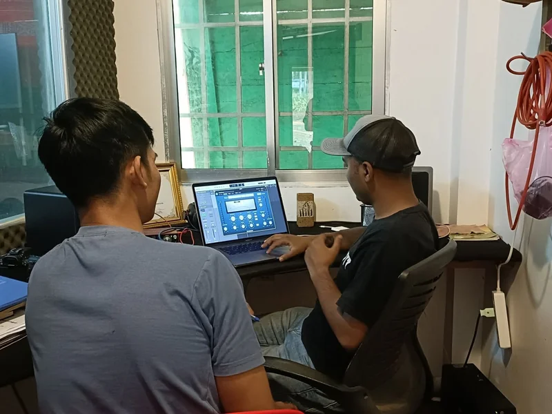
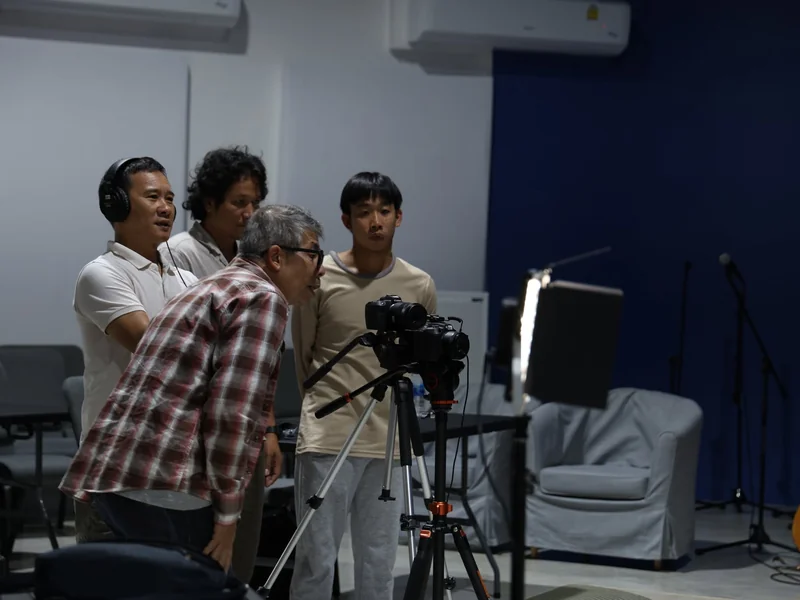
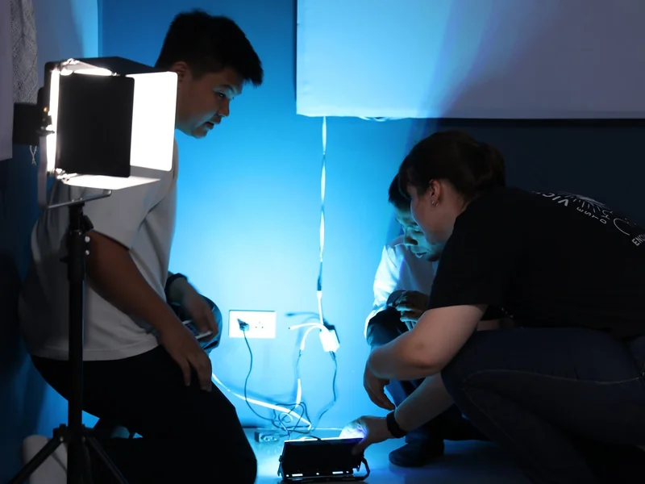
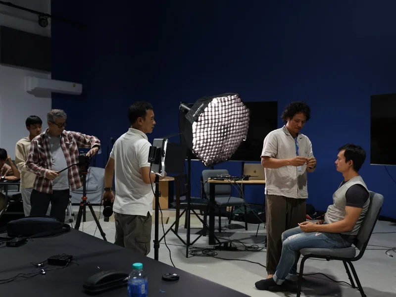
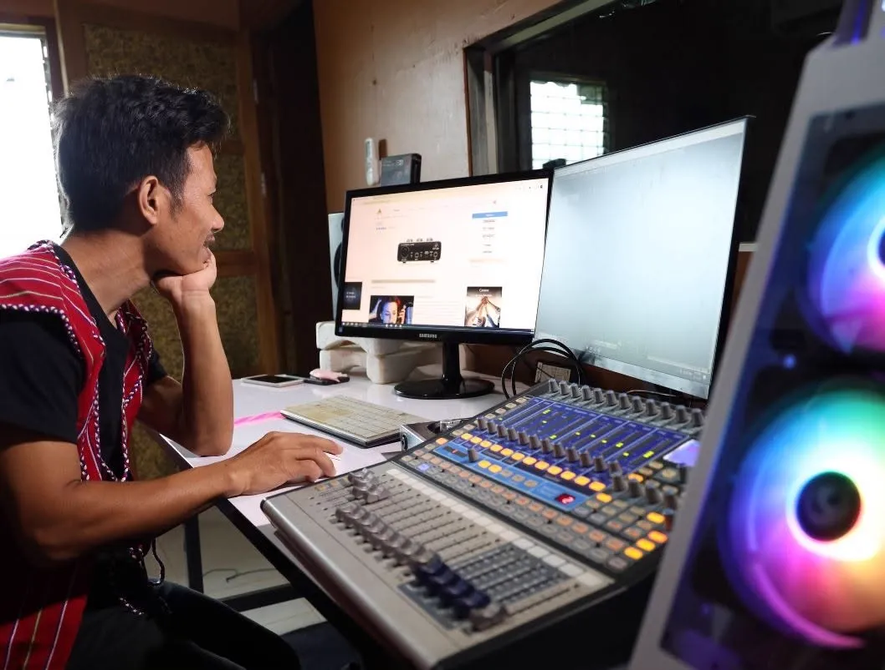

Video catalog
Browse and download finished films across dozens of languages, built for outreach and evangelism use.
View catalogA ministry of YWAM Chiang Mai
Gospel films, dubbing and media training for 2.8 billion unreached people across Asia. Made by a team based right here in Chiang Mai.

The need
In Asia, over 25 million people have no access to Christian resources at all. Sometimes it is geography, they are too remote for anyone to visit. Sometimes it is government persecution. Sometimes there is no scripture translation, or no literacy to read one if there was.
There are 2.8 billion unreached people across Asia facing these obstacles. That is more than a third of the world's population. (Statistics: Joshua Project, April 2022)
The solution
We build a team in each culture that can make Christian resources in their own language. Video can be mass produced and passed hand to hand where even an evangelist cannot go. When people see the Gospel in their own heart language, they realize it has relevance to their culture too.


Gallery



Current work
Our team compiles productions by language from South East Asia, South Asia and even Africa. Testimonies, films, teachings, dubbing and documentaries, all free to download and share.
Browse and download finished films across dozens of languages, built for outreach and evangelism use.
View catalogPortable MP3 players, micro SD cards and other physical media tools for outreach in places without reliable internet.
Ask about distributionBehind the scenes
A look at the production process, from location scouting to the edit suite, that turns a language need into a finished film.




Our facility
Twenty minutes from Chiang Mai International Airport sits our completed campus, ministry headquarters for producing evangelistic resources and training ethnic teams. It houses a meeting hall and video studio seating up to 70 for on-site training and green-screen production, a media office for 25 trainers, a dedicated audio studio, an equipment storage facility, and a distribution office that preps projectors, generators, speakers and Gospel audio players before they go out into the field.
By 2030, our goal is 10 million views a year of videos produced through Project Video, and 500,000 people experiencing an audio or video Gospel presentation through our ministry partnerships.
Leadership
Project Video Asia is led by a small team of missionary filmmakers based full time in Chiang Mai. They train every student who comes through the program directly, on real productions, not simulated ones.
Get involved
One evening outreach, in the team's own words: a screen goes up in a village, and a film becomes the start of a conversation.
Roles you could fill
Cut footage into finished films and dubbed versions, working closely with translators to match pacing to each language.
Shoot on location and in studio, from village outreach documentaries to scripted Gospel films.
Translate scripts and record voice tracks in heart languages, making existing films accessible to new communities.
Plan shoots, manage logistics and budgets, and keep productions moving from concept to release.
Get finished films into hands and screens across Asia, from SD cards to community screenings.
Long term · 12 months or more
Most staff roles are based here at our Chiang Mai campus and carry a two year minimum commitment. Can't find a fit below? Reach out directly or use our general staff application.
Develop and deliver training resources and educational content to ethnic teams across Asia, in person and online.
View postingTeach video production and storytelling skills to ethnic media teams as they build their own local resources.
View postingPlaced with our internal departments or one of 14+ ethnic studios. Two intakes a year; the next cycle runs August 2026 to July 2027, applications due May 17, 2026. Program fee is $3,000 (covers your first 3 months of housing, with discounts available for non-Western candidates), plus roughly $1,000 a month in living costs and $4,000 for flights and setup. You'll need to be 21 or older with a heart for missions.
Learn moreQuestions about a role? Email us, or see every open position and our general staff application on the staff opportunities page.
Short term · days to weeks
No long term commitment needed. A short trip is a real way to see the work firsthand and walk alongside local believers.
A short term trip for adults wanting to deepen their faith alongside local believers, October 9 to 25, 2026. Starts at our Chiang Mai training center, then travels to Dhaka for village outreach and storytelling. $2,500 plus international airfare.
Learn moreContact
Monday to Friday, 9:30 to 17:00. Email us. We welcome visitors to our International Training Center, just reach out first to arrange a time.
P.O. Box 138, Chiang Mai Post Office, A. Muang, Chiang Mai 50000, Thailand
Follow along
Get social
Facebook · Vimeo · YouTube · Instagram